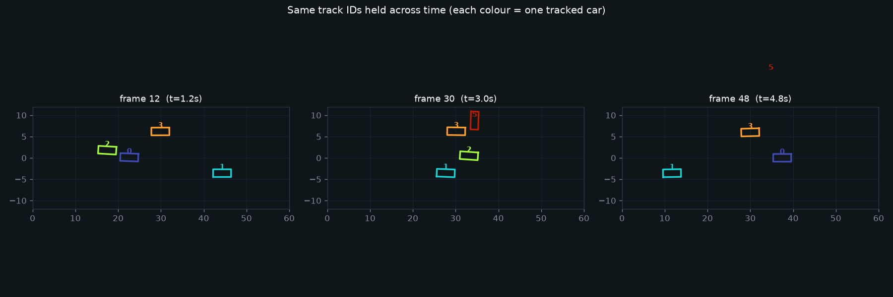

Shuffle a video's frames and the event is gone. The meaning lives in order, motion, identity over time, and the ability to remember what happened minutes ago. Motion estimation, multi-object tracking, long-form memory, and future-frame prediction — from first principles, drawn live and grounded in the ICRA / IROS / CoRL / RSS and CVPR 2026 corpora.
Five ideas, each a live diagram then plain words — why order matters, how motion signals action, what tracking really is, why long video is a compression problem, and why future prediction needs to commit to one sharp answer. Each has a ‘the actual math’ toggle.
image classifiers applied to individual frames — cheap, but temporal structure is thrown away.
separate appearance and flow streams fused late; then C3D / I3D fold time into 3D convolutional filters.
temporal self-attention (TimeSformer, ViViT) lets every frame attend to every other; accuracy rises, cost soars.
CLIP-style contrastive pretraining on video-text pairs (CLIP4Clip, InternVideo) + instruction tuning; zero-shot recognition arrives.
token compression, frame selection, SSM-based sequence models (Mamba, HieraMamba) scale to hour-long video and real-time streaming.
An image classifier sees a single frame and says “door.” Show it the same door in each frame of a video and it still just sees “door” — it has thrown away whether the door opened or closed, who did it, and when. That information lives entirely in the sequence, not in any one picture.
This is the core problem of video understanding. You cannot treat a video as a bag of still images and hope to recover the temporal structure; it is gone the moment you drop the order. Motion, change, causality, and event identity all depend on knowing which frame came before which — and how fast things moved between them.
A video x = (f₁, f₂, …, fₒ) is an ordered sequence; a set {fᵢ} loses the permutation σ that carries the causal structure.
Any temporal model must be equivariant to shifts and sensitive to order: P(xᶄ₊₅ | x₁⁻ᶄ) ≠ P(x₊₅⁻ᶄ | x₁⁻ᶄ) in general.
Between any two frames, every pixel has moved a little or a lot. Optical flow measures that displacement: a dense field of vectors, one per pixel, saying where each point went. The moving person has large vectors; the static wall has nearly zero. That flow field is the raw signal of action — the difference between “the player kicked” and “the camera panned.”
Early work learned two parallel streams — one for appearance, one for flow — and fused their predictions. Modern 3D convolutions and video transformers collapse the two streams into one by treating time as a spatial dimension, but the insight is the same: action recognition is really motion recognition, and separating what moved from what stayed still is the first step.
Optical flow (u,v) at pixel (x,y): minimize ||I(x,y,t) − I(x+u,y+v,t+1)||² subject to brightness constancy + regularization (Horn-Schunck).
Two-stream score: P(action) = λ Pᶀ(action|RGB) + (1−λ) Pᵽ(action|flow); 3D convolutions subsume both into spatio-temporal filters K ∈ ℝ^{T×H×W}.
Detection is easy to describe: run a network on a frame, get boxes and labels. Tracking adds a constraint the detector ignores: the same physical object must carry the same identity across every frame it appears in. When two vehicles cross paths and one briefly disappears behind a sign, a tracker must decide which ID reappears on each side — and get it right, or every downstream count and trajectory is wrong.
The standard approach is “tracking by detection”: detect every frame, then associate the detections across time using motion models and appearance features. The failure modes are symmetric: re-identify too aggressively and unrelated objects merge; too conservatively and every occlusion spawns a new ID. Event cameras, which fire per-pixel on change rather than frame by frame, are pushing asynchronous tracking that avoids the occlusion window entirely.
Tracking-by-detection: cost Cᵢ₆ = α · IoU(bᵢ,b₆) + (1−α) · d(eᵢ,e₆) between detection i and track j; Hungarian algorithm finds min-cost assignment.
Kalman state x = [cx,cy,s,r,˙cx,˙cy,˙s]ᵀ; predict with constant-velocity, update with detection — SORT's core; re-ID features extend it to Re-ID across occlusion (DeepSORT / ByteTrack).
Attention is quadratic in sequence length. A 30-fps video of an hour-long procedure has 108,000 frames — you cannot run a transformer that attends to all of them at once. The field answers this with frame selection, token compression, and structured memory: pick the key moments, compress the rest into a compact representation, and store enough to answer questions about what happened, and when, and why.
The deeper problem is that what counts as a “key moment” depends on the question you will later ask. A frame selection policy that is good for “who won?” may discard the one frame that answers “who fouled first?” This is why the best long-video systems use the question itself to guide selection — and why annotation is so expensive: humans must watch the whole thing to label what matters.
Attention cost O(T²D) makes full-video attention prohibitive; memory reduces effective context to M slots: compress x₁⁻ᶄ → m ∈ ℝ^{M×D}, attend only over m.
Frame selection: score sᵢ = fθ(fᵢ, q) for query q, keep top-K frames; learned selection minimizes task loss end-to-end, avoiding heuristic uniform sampling.
A person watching a ball arc upward can predict where it will land. A model that can do the same has implicitly learned the physics of the scene — which is exactly what self-supervised video pretraining exploits. Predict the next frames (or the masked patches, or the future flow field) from unlabeled video, and the model acquires temporal structure for free, without a single human label.
The trap is multimodality. At each step the future genuinely branches: the ball might be caught or drop; the pedestrian might turn left or right. A model minimizing mean squared error averages all those futures into a smeared, confident wrong answer. This is why prediction models now use diffusion or flow-matching: sample one sharp future from the distribution rather than commit to the blurry mean. The resulting models double as world models for planning.
Next-frame loss: L = ||f̂ᶄ₊₁ − fᶄ₊₁||² collapses to the conditional mean E[fᶄ₊₁ | f₁⁻ᶄ], blurring multimodal futures.
Flow / diffusion prediction: sample f̂ᶄ₊₁ ~ pθ(fᶄ₊₁ | f₁⁻ᶄ) via reverse SDE or ODE — a single sharp draw from the conditional, not the mean.

Where the temporal signal comes from and what it costs — ignoring time, fusing it with attention or convolution, or processing it causally in a stream.
| How it uses time | Cost | Long-range? | The catch | |
|---|---|---|---|---|
| Per-frame image models | ignores time; each frame processed independently | cheap — any image backbone | no — no cross-frame context | misses all temporal and motion information |
| Temporal models (3D/attention/SSM) | fuses frames with 3D conv, attention, or state-space scan | high — O(T) to O(T²) | limited to window size | quadratic attention; memory at long horizons breaks |
| Streaming / online (causal) | processes each frame causally, updating a compact state | low per step — constant state | yes, in principle | state must compress; distant events fade from memory |
Every family below leans on one or more of these — the recurring reasons to model time rather than treat each frame as a fresh image.
Video understanding compresses the crucial moments out of hours of footage and binds them into a coherent story — the same event across widely-separated frames.
Treating optical flow and inter-frame change as primary inputs catches the action that a per-frame classifier throws away.
Multi-object tracking re-attaches identities after objects cross or disappear, turning a stream of detections into consistent tracklets for counting, safety, and behavior analysis.
Learned compression and frame selection make it possible to answer questions about a full-length lecture or procedure without attending to every frame.
Predicting future frames, masked patches, or flow fields trains temporal models at zero annotation cost — the internet supplies the curriculum.
Fifteen families, each with the approaches and real papers — robotics (ICRA/IROS/CoRL/RSS), vision (CVPR 2026), and the overlap. Jump to any:
Hour-long videos produce ~108,000 frames at 30 fps — no attention mechanism can hold all of them at once, so the model must decide what to discard before answering a question.
Hour-long videos — lectures, procedures, sports matches — demand models that select which moments to attend to and compress the rest into a compact memory the system can query later.
The binding constraint is attention cost: storing and attending to every token in an hour of 30-fps video is not feasible, so learned selection and memory are the problem.
Propagating a pixel-level mask across frames means every pixel must carry the same identity through motion blur, occlusion, and scale change — a constraint that per-frame segmentation completely ignores.
Pixel-level segmentation must propagate a mask across frames, keeping the same identity through motion blur, occlusion, and scale change — harder than detection and harder than single-frame segmentation.
Referring expressions and language ground the segment to ‘the red car on the left’ rather than every car in the frame.
Localizing an action means finding both what happened and when it started and ended — a two-dimensional search that detection-only systems completely miss.
Action recognition classifies a clip; temporal action detection must also find when each action starts and ends in a long video — a temporal segmentation problem on top of the recognition problem.
Self-supervised ranking and tokenization compress the motion signal without requiring per-frame action labels.
Answering a question about a video requires selecting the frames that contain the evidence and ignoring the (often majority) frames that do not — the distractor-frame problem.
Video QA asks a model to answer a natural-language question grounded in video evidence, requiring temporal grounding, multi-step reasoning, and the ability to say which frames support the answer.
Evidence purity — selecting only the frames that actually bear on the question — is the recurring bottleneck.
Given a natural-language query, find the exact start and end second in a video — a retrieval problem where the index is continuous time, not discrete tokens.
Given a natural-language query and a video, find the exact moment (start and end time) the query describes — a retrieval problem where the index is time rather than space.
Streaming geometry and referring-based grounding push temporal grounding into real-time and open-vocabulary settings.
Multi-object tracking must solve three simultaneous problems: detect every object, predict its future position, and re-attach the correct identity when it reappears after occlusion — each failure is independent but the errors compound.
Multi-object tracking (MOT) assigns and maintains consistent identities for every object in every frame, even as objects enter, leave, cross paths, or vanish behind occluders.
Event cameras fire per-pixel on luminance change rather than at a fixed rate, giving microsecond-precision detections between frames and attacking the occlusion window at its root.
Predicting where an agent will be in the next 5 seconds requires modeling the intent of every other agent simultaneously — a joint distribution over all futures, not 15 independent single-agent predictions.
Predicting where agents — pedestrians, vehicles, robots — will be in the next few seconds requires modeling intent, social interaction, and the physical constraints of the scene.
Flow-matching and causal attention give sharper, more diverse trajectory samples than earlier regression-based methods.
Human video contains no action labels — only pixels — yet a robot must infer which muscle-equivalent commands produced each observed motion, across kinematics that differ from its own.
Teleoperation is expensive; ordinary human video is abundant. Learning manipulation and locomotion policies directly from uncurated video requires inferring missing action labels from visual change alone.
The gaps are viewpoint mismatch, missing proprioception, and the distributional distance between human and robot kinematics.
Self-supervised video pretraining works because a model that can predict masked or future patches has implicitly learned what objects are, how they move, and what is physically plausible — without a single human label.
Self-supervised pretraining on unlabeled video — predicting masked patches, future frames, or 3D Gaussian motion — learns temporal structure without a single human label.
The resulting representations transfer to downstream recognition, retrieval, and prediction tasks with far fewer labeled examples.
Estimating the dense motion field between two frames means solving a massive underdetermined system — one constraint per pixel (brightness constancy) but two unknowns per pixel (u, v) — so regularization decides the answer.
Optical flow — the dense per-pixel motion field between frames — is the most direct measurement of what changed and where. Estimating it accurately, fast, and from event cameras is still an active problem.
Factored and unified flow models separate geometry from appearance motion, letting them generalize across domains.
An event camera fires an asynchronous spike at each pixel the moment its log-luminance changes — producing microsecond timestamps with no motion blur, but no frames — forcing completely new representations.
Event cameras fire per-pixel when luminance changes, not at a fixed frame rate. The output is a stream of microsecond-precision events — no motion blur, high dynamic range, and a data rate proportional to scene activity.
The challenge is that standard vision algorithms assume frames; adapting them to asynchronous, irregular event streams requires new architectures and representations.
A streaming model must give an answer after each frame without ever seeing the future — which means it must compress all past context into a fixed-size state, discarding irrelevant history before it overflows.
Real-time applications — autonomous vehicles, live sports analytics, video conferencing — cannot wait for the full video before acting. Streaming models must process each frame causally, maintaining a fixed-size state.
Token compression and learned dropping discard spatial redundancy to keep the state small without sacrificing temporal coherence.
A video has thousands of visual tokens per second; a language model has a fixed context window — the VLM’s core engineering problem is aggressive compression that keeps what the text query cares about and drops everything else.
Video-language models align visual tokens from video with language tokens from captions, questions, or instructions — enabling open-vocabulary recognition, captioning, and instruction following.
The bottleneck is token count: a few seconds of video already produces thousands of visual tokens, overwhelming the language model's context window.
Anomaly detection in video must flag events it has never seen at training time — which means learning a model of normality tightly enough that a fall, a fight, or an unexpected stop stands out by how much it violates that model.
Anomaly detection in video must flag rare, ill-defined events — a fall, a fight, an unexpected stop — without having seen most anomaly types at training time. The core tension is between sensitivity and false-alarm rate.
MLLMs serve as zero-shot anomaly detectors because they carry common-sense about what is normal, reducing the need for annotated anomaly footage.
A video prediction model must choose one sharp future from a distribution of plausible futures — averaging them produces a blurry mean that is wrong about everything, right about nothing.
Predicting future frames or states forces a model to learn how the world works — physics, agent intent, scene dynamics — making prediction a general pretraining objective for world models used in planning.
LiDAR-based and vision-language world models extend future prediction beyond RGB to 3D structure and language-specified goals.
ROBO ICRA/IROS 2025 · CoRL/RSS 2024 CVPR CVPR 2026 BOTH the seam — titles are real, from the analyzed corpora.
Video and temporal understanding has made large gains — and is still far from done. What is genuinely still hard: